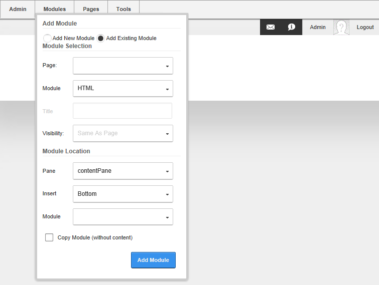
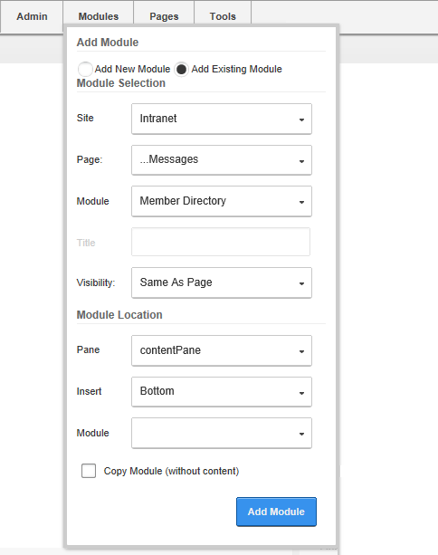

Adding an Existing Module (RibbonBar)
How to add an existing module to the current page using the RibbonBar. The content of this module is shared with the existing module, therefore updating the content on any version of this module will update the content in all of the other versions as well.
Important. You cannot add an existing module to the page where it already exists.
Tip: You must be authorized to deploy a module and have the appropriate page editing permissions to add modules to the current page.
- Hover over the Modules link until the Module menu is displayed.
- In the Add Module section, select the Add Existing Module radio button.

- Go to the Add Module section.
- At Page, select the page where the existing module is located.
- At Module, select the module to be added. Modules are listed by module title. Note: Selecting the module here appends either 'with content' or 'without content' to the Copy Module field below depending on whether the selected module supports copying of content.
- Optional. At Visibility, select from the following options:
- Same As Page: This sets the module as visible to all roles/users who can view this page. This is the default setting.
- Page Editors Only: The sets module as only visible only to the roles/user who can edit this page. Select this option if you want to add content and configure the module settings before others can view the module.
- Go to the Module Location section.
- Optional. At Pane, select the pane you want to insert the module into. The module is added to the Content Pane by default. The names of other panes will depend upon the skin applied to this page. If you select a pane other than the Content Pane, the position of the pane is briefly shown on the page.
- Optional. At Insert, select the placement of the module from the first drop down list. One or more of the following options is available, depending on the number of modules located in the selected pane:
- Top: Select to add the module above all existing modules within the selected pane. Skip to Step 9.
- Above: Select to add the module above another chosen module within the selected pane.
- At Module, select the module the new module will be added above.
- Below: Select to add the module below another module within the selected pane.
- At Module, select the module the new module will be added below.
- Bottom: This adds the module below all existing modules within the selected pane. This is the default option.
- At Copy Module (with content), select from these options.
- to create an independent instance of this module. This new module contains both the settings and (where applicable) the content of the existing module however you can modify this module without affecting the existing module.
- to display the existing module on this page. This module shares the settings and (where applicable) the content of the existing module and modifying either instance will update both versions.

- Click the Add Module button.
Note: When adding an existing module from another site, a warning message will be displayed advising that the module may not support module sharing. Exceptions are the HTML/HTML Pro and Journal modules which have be developed with module sharing capabilities.
-
See "Adding Module Content"
-
See "Setting Permissions to Deploy a Module"